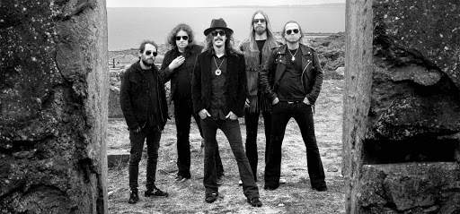
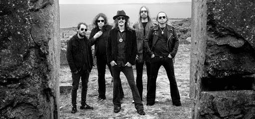

Formed In: 1990 Last Original Member: David Isberg (left in 1992) Earliest Active Member: Mikael Åkerfeldt (joined in 1990) Note: Åkerfeldt was asked by Isberg to join, which prompted every other member of the band to leave.
Opeth was formed as a death metal band in the autumn of 1990 in Stockholm, Sweden by vocalist David Isberg. Isberg asked former Eruption band member Mikael Åkerfeldt (just 16 years old at the time) to join Opeth as a bassist. When Åkerfeldt showed up to practice the day after Isberg invited him, it became clear that Isberg had not told the band members, including the band's current bassist, that Åkerfeldt would be joining. An ensuing argument led to all members but Isberg and Åkerfeldt leaving to form a new project. The band name was derived from the word "Opet," taken from the Wilbur Smith novel The Sunbird. In this novel, Opet is the name of a fictional Phoenician city in South Africa whose name is translated as "City of the Moon".
| Blackwater Park | Still Life | My Arms, Your Hearse | Deliverence |
| Blackwater Park | Godhead Lament | When | Master's Apprentices |
| The Funeral Portrait | Moonlapse Vertigo | The Amen Corner | Deliverance |
| The Drapery Falls | Serenity Painted Death | Credence | A Fair Judgement |